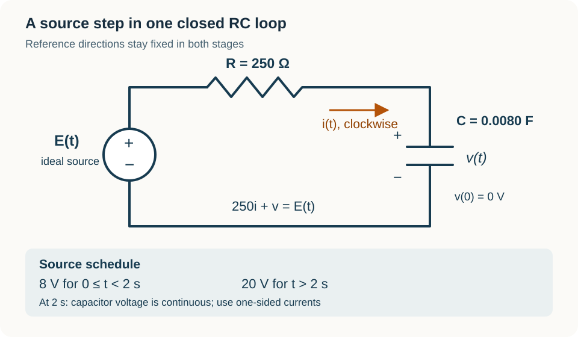

Course practice / Batch 14 / 2026-10-12 PDT
MTH 256
一阶微分方程
First-order differential equations · 阶数与线性、初值及解验证、方向场、分离变量、积分因子、牛顿冷却、指数与逻辑斯蒂增长、定容混合模型及 RC 电路
One forcing term, two oscillating candidates
Consider \(y^{\prime}+2y=2\cos t-\sin t\), with y(0) = 5, and the candidates \(u(t)=\cos t\) and \(w(t)=\cos t+4e^{-2t}\). Both variables are dimensionless, angles are in radians, and the time domain is all real t.
- Identify the independent variable, dependent variable, and order. Is the equation linear in y? Explain whether the trigonometric functions of t affect that classification.
- Differentiate each candidate and check the differential equation. Then check the initial condition and identify which candidate solves the stated IVP.
- Use the differential equation to find the slope required at (t,y) = (0,5), and compare it with the derivative of the selected candidate there. Find w(t) − u(t), and explain why a term with a nonzero derivative can be added here without changing the forcing term.
中文提示（不含解答）
线性判断针对 y 及其导数；验证初值问题时，需要分别检查方程和初始数值。比较两个解时，可把它们的差代入齐次方程。
Upward slopes on both sides of a resting level
For \(y^{\prime}=(y-2)^2\), both variables are dimensionless. Put t on the horizontal axis and y on the vertical axis.
- Calculate slopes at all nine points with \(t\in\{0,1,2\}\) and \(y\in\{1,2,3\}\), then sketch a short segment at each point. Explain why the columns match.
- Find all horizontal slope segments and all constant equilibrium solutions. State the slope sign for y < 2 and for y > 2.
- Draw vertical direction arrows below and above the equilibrium. Does a solution just below y = 2 move toward that level or away from it? What about a solution just above it? Explain why upward slopes on both sides do not mean attraction from both sides. Do not solve the equation.
中文提示（不含解答）
箭头向上表示 y 增加；在平衡值下方与上方，增加可能分别意味着靠近与远离。
An increasing decay coefficient still leaves a positive response
Solve \(y^{\prime}=-e^t y^2\), y(0) = 2, for \(t\ge0\). Both variables are dimensionless. Work with the positive solution selected by the initial value.
- Separate variables, integrate, and find an explicit solution. Identify the constant equilibrium lost when dividing by \(y^2\), and explain why it does not satisfy this IVP.
- Verify the differential equation and the initial value. Find the first time y = 2/3, exactly and to three decimals, and find the slope at that time exactly.
- Find the initial slope and the long-term limit. Explain from the formula why the denominator stays positive on the stated domain, why the target occurs only once, and whether y reaches zero at any finite time.
中文提示（不含解答）
分离后积分 y 的负二次幂。先确认分母在 t ≥ 0 时的符号，再判断解的正负与单调性。
A time-dependent coefficient produces a single peak
For \(t\ge0\), solve \(y^{\prime}+2ty=6t e^{-t^2}\), y(0) = 1. Both variables are dimensionless.
- Find an integrating factor, write the product-derivative equation, and solve the IVP. Verify the differential equation and initial value.
- Find y(1) and its slope, exactly and to three decimals. Use the sign of the derivative to find every interval on which the solution increases or decreases.
- Find the greatest value attained for t ≥ 0 and its time, exactly and to three decimals. Find the long-term limit. Explain why the zero initial slope alone does not locate the greatest response.
中文提示（不含解答）
积分因子与右边的指数因子会相消；求极值时，要检查导数在整个给定时间范围内的正负变化。
An exponential substitution rejects an extra algebraic root
Solve \(y^{\prime}+2y=6-4e^{-t}\), y(0) = 0, for \(t\ge0\). Both variables are dimensionless.
- Use an integrating factor to solve the IVP. Verify the differential equation and initial value.
- Find the initial slope. Use your derivative to show that the solution increases throughout the stated time domain. Find its long-term limit and determine whether that limiting value is reached at a finite time.
- Find the first time y = 5/4, exactly and to three decimals. When solving the target equation, put \(x=e^{-t}\), find both roots of the resulting quadratic, and use \(0<x\le1\) to decide which root gives an allowed time. Find the slope at that time.
中文提示（不含解答）
先解线性方程，再把目标方程变成关于 e 的负 t 次方的二次方程。代换后的未知量也有范围限制。
Choose a starting temperature to meet a cooling deadline
A sample will cool in a room held at 24 °C. Its initial temperature T(0) is to be chosen so that T(8) = 40 °C exactly. Assume \(T^{\prime}=-k(T-24)\), where \(k=(\ln2)/4\) min\(^{-1}\). Use T in °C, t in minutes, and this model for all requested times t ≥ 0.
- Determine the required T(0), derive T(t), and verify the target at t = 8 min. State whether the resulting sample cools or warms.
- Find the first time T = 48 °C, exactly and to three decimals in minutes. Find the remaining time from that instant until T = 40 °C and the average cooling rate over that interval, to three decimals with units.
- Find the instantaneous cooling rates at T = 48 °C and T = 40 °C, exactly and to three decimals with units. Compare the average rate from part 2 with those rates. Find the limiting temperature and state whether it is reached at a finite time.
中文提示（不含解答）
已知后续目标时，可从温差的指数衰减关系反推初温。平均速率的时间分母应使用两个累计时刻之差。
A share of the current population differs from a growth percentage
A continuously modeled culture follows \(P^{\prime}=rP\), with an unknown constant r > 0. It has 240 organisms initially and 360 organisms after 4 hours. Assume no removals or carrying-capacity limit. Use t in hours and the model for t ≥ 0. Define the accumulated net increase by \(A(t)=P(t)-240\).
- Determine r exactly and to four decimals with units, and solve for P(t). Verify both observations.
- Find the first time when A(t) is 60% of the current population P(t). Give the population, accumulated increase, and time, with the time exact and to three decimals in hours. What percentage increase over the initial population does this represent?
- Find the instantaneous growth rate at that time, exactly and to two decimals with units. Find the average growth rate from t = 0 to that time, to two decimals. Verify by integration that the total net increase equals \(\int_0^{t_*} rP(t)dt\), where \(t_*\) is the time found in part 2.
中文提示（不含解答）
“当前总量的 60%”与“比初始总量增加 60%”的分母不同；先写出 A = 0.60P，再求对应的时间。
A short observation window ends before the logistic growth peak
A culture follows \(N^{\prime}=0.20N(1-N/1200)\), N(0) = 300 organisms. Time t is in days, 0.20 has units day\(^{-1}\), and 1200 organisms is the carrying capacity. Treat N as continuous. This fitted model is authorized for predictions only on \(0\le t\le4\) days; do not assume it describes later days.
- Find the nonnegative equilibrium populations and the slope signs between and above them. Solve the IVP by separation, and verify the initial population.
- Find the first time N = 400, exactly and to three decimals in days, and check that it lies in the stated interval. Find the total growth rate then, with units.
- Find N(4) and the greatest total growth rate actually attained on \(0\le t\le4\), each to two decimals with units, and state when that greatest rate occurs. Compare with the population at which the formula \(G(N)=0.20N(1-N/1200)\) is largest, and explain why that unrestricted formula maximum is not attained during this experiment.
中文提示（不含解答）
先看解在四天内经过哪些种群数量，再寻找实际达到的最大增长速率；关于 N 的函数最大值未必出现在给定时间段内。
A salt dose briefly resets an ongoing rinse
A tank contains 80 L of liquid and initially 1.6 kg of dissolved salt. Pure water enters at 4 L/min, and perfectly mixed liquid leaves at 4 L/min. At t = 10 min, exactly 0.8 kg of salt is added and dissolves instantaneously. Idealize this addition as changing salt mass but not liquid volume; no liquid leaves instantaneously. The same rinse continues. Assume perfect mixing, constant flow rates, no evaporation, and no other losses. Let S(t) be salt mass in kg and \(C(t)=S(t)/V(t)\) concentration in kg/L. Use t in minutes and apply the differential equation between addition events, not at the instantaneous jump.
- Find V(t), set up the IVP before the addition, and state the jump condition using \(S(10^-)\) and \(S(10^+)\). Solve for S(t) before and after t = 10, with t always measured from the original start. For the value at t = 10, use the post-addition value.
- Find the first time after the addition when C = 0.010 kg/L, exactly and to three decimals in minutes. Check that the time is later than 10 min. Find the salt mass then and the total volume of pure water admitted since t = 0.
- Calculate the total salt removed by integrating the outgoing salt rate separately before and after the addition, up to the target time. Check the overall balance using the initial mass, added salt, final mass, and removed salt. Explain why the single instantaneous jump changes the balance even though no outgoing flow impulse occurs.
中文提示（不含解答）
两阶段之间不是连续衔接：加入固体盐使盐量瞬间增加 0.8 kg。排盐积分要按加盐前后分段，但这一瞬间本身没有排出液体。
A source step changes current without a capacitor-voltage jump
The diagram shows one closed series loop with an ideal programmable voltage source, R = 250 Ω, and C = 0.0080 F. The source is E(t) = 8 V for \(0\le t<2\) s and E(t) = 20 V for \(t>2\) s. The loop is never opened. Capacitor voltage v(t), in volts, is the upper-plate potential minus the lower-plate potential, with v(0) = 0 V. Current i(t), in amperes, is positive clockwise, into the upper plate. The labeled polarity gives \(Ri+v=E\). Assume ideal components and continuous capacitor voltage at t = 2. Use t in seconds, apply the differential equation within each stage, and use one-sided currents at the source change.
- Find the RC time constant. Write and solve the IVP for v(t) in the first stage, find v(2), and use that value to solve the second stage in terms of the original time t. Verify the initial voltage and continuity at the change.
- Find i(t) in both stages. Give \(i(2^-)\), \(i(2^+)\), and their signed difference, in mA, exactly and to three decimals. Explain from the loop equation why current changes instantly while v stays continuous.
- Find the first time v = 12 V, exactly and to three decimals in seconds, and verify that it occurs after the source change. Find the current at that time and the long-term limits of v and i. Find the signed charge delivered into the upper plate from t = 0 to that time by integrating i in both stages, and check it against the change in \(Q_C=Cv\).

中文提示（不含解答）
第二阶段用 t − 2 表示切换后的经过时间；电容电压连续，但电源电压的跳变会改变电流。电荷积分需要分别覆盖两个阶段。